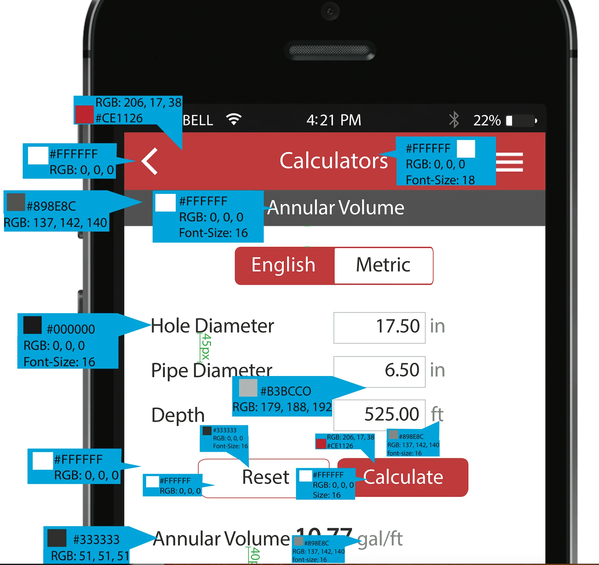
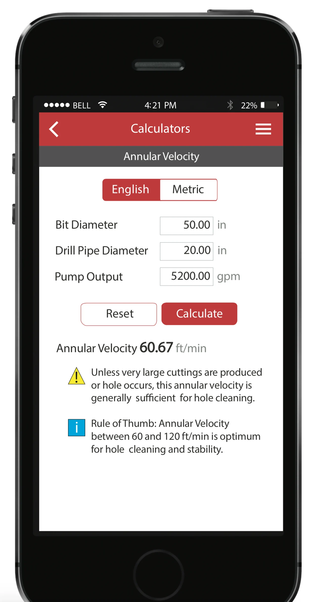
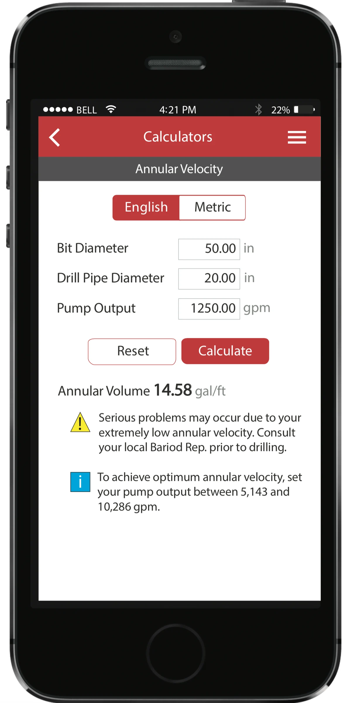
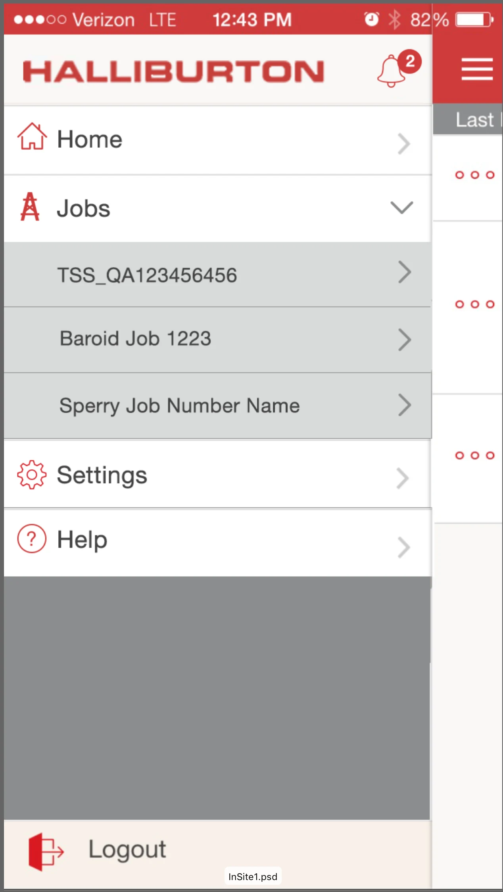
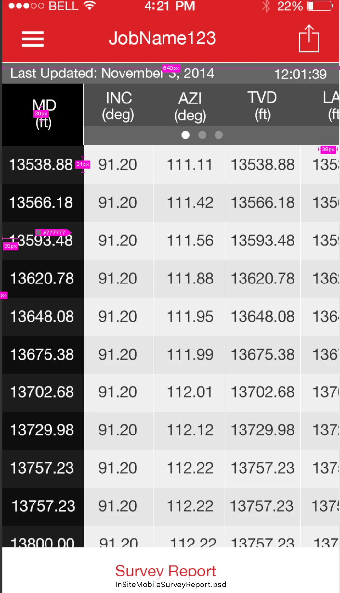
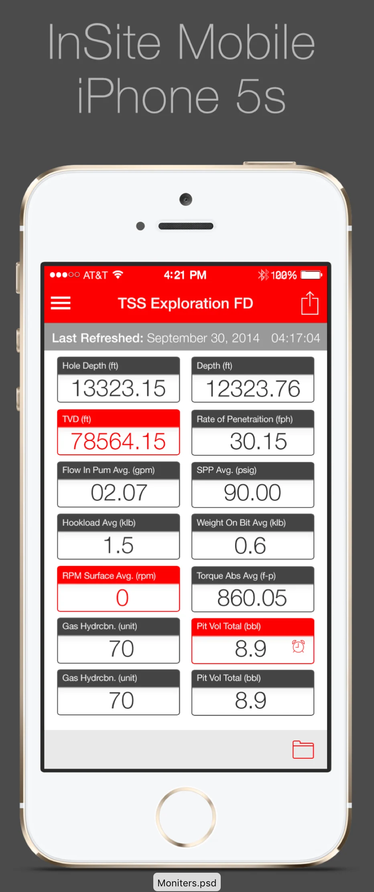

Case Study
Halliburton
As Lead Designer, I redesigned a field-operations mobile experience to support fast, accurate work in low-connectivity environments—improving data capture workflows, decision visibility, and dashboard patterns used across teams.
Project summary
Field teams needed to capture critical information on the job—often in harsh environments, on shared devices, and with unreliable connectivity. The work focused on replacing error-prone manual processes with a mobile workflow system that supports offline work and syncs reliably when service returns.
My role
I was the Lead Designer responsible for end-to-end workflow design, UI pattern definition, and high-fidelity execution. I partnered with product and engineering to align on constraints (offline behavior, validation rules, and sync states) and produced implementation-ready specs and prototypes.
The challenge
Existing tools performed poorly in the field. Connectivity drops made data entry unreliable, critical details were hard to find quickly, and inconsistent patterns created errors that required follow-up and rework.
Key constraints
- Connectivity: offline or intermittent service is common on site
- Time pressure: workflows must be fast, scannable, and resilient to interruptions
- Data integrity: inputs need validation, explicit units, and review at commit points
- Traceability: users need confidence that changes are saved and actions can be audited
Approach
I designed an offline-first workflow model with predictable patterns for capture, review, and sync—so teams can keep working continuously and trust the system even when connectivity is inconsistent.
- Offline-first behavior: local save states, clear sync indicators, and safe recovery when service returns
- Rapid data entry: minimized typing, reduced navigation depth, and optimized layout for quick scanning
- Progress + status: visible “what’s done / what’s next” with check states and review moments
- Error prevention: constrained inputs, validation rules, and confirmations before submission
Solution highlights
1) Fast, confident data capture
Structured input screens focused on clarity and accuracy—using strong hierarchy, explicit units, and predictable commit points so users can verify what will be submitted.

2) Workflow patterns that survive interruptions
Designed repeatable workflow structures so teams can pause and resume without losing context—preserving progress and reducing re-entry.


3) At-a-glance visibility for action
Designed views that surface the few signals that drive action in the field—using progressive disclosure to keep screens scannable.

4) Dashboards for supervisors and stakeholders
Created dashboard patterns to monitor work status, identify bottlenecks, and spot quality issues earlier—without relying on manual rollups.


Outcome
The redesigned experience established a more dependable, field-ready workflow system with clearer data capture, stronger review moments, and improved visibility into operational status—supporting faster work while protecting accuracy under real-world constraints.
What I’d improve next
- Harsh-condition usability: expand testing for glare, gloves, one-handed use, and vibration/motion contexts
- Sync transparency: strengthen messaging for conflicts, retries, and audit/history for edge cases
- Performance: optimize offline caches and large lists for older devices and shared hardware